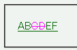

互換モードでは、a要素の子孫要素で前景色を設定しているとき、その前景色がa要素全体に反映されてしまう。
<style type="text/css">
del {
color: fuchsia;
}
</style>
<p><a href="../macie.html">AB<del>CD</del>EF</a></p>
del要素内のみ、前景色をピンク色にしています。
※このページは互換モードで表示させています。
WinIE6.0での表示（互換モード）
MacIE5互換モードでは不具合の発生が確認されました。標準モードでは当該要素にのみ、前景色が反映されます。